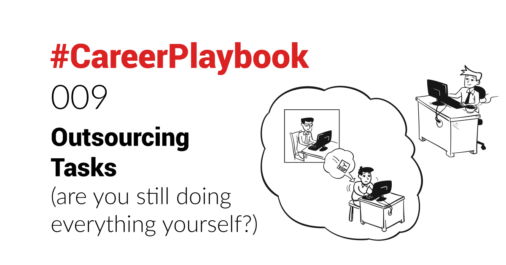

We covered how to remain in control of one's day in #CareerPlaybook 008.
Ultimately, it is not about doing everything oneself though. Low-value tasks should be delegated. Tasks for which your skills are not good enough, should be delegated.
I built lead generation processes in my Sales leadership roles, relying on outsourcing some tasks.
I built a bootstrapped startup, up to its acquisition, with no employees, only freelancers and outsourcing tasks (well... and a lot of bots!).
So it is definitely an approach that works and helps you multiply your output.
And while I have an "automation first" mindset, not everything can be automated. Or at least not in a financially viable way. And some tasks are one-off and/or require (good) human skills.
Outsourcing your low-value, time-consuming tasks, is a way to free up your time (and mind) for more valuable ones.
Outsourcing your high-value tasks that require expertise you do not possess, and for which learning the required skillset is too time-consuming, ensures your output is the best it can be.
Examples from my own experience
Here are some examples of tasks I have outsourced in the past:
- doing research to help find new prospects, explore a new market, identify competitors, etc..
- formatting a document (like a proposal) to look professional, and generate a template.
- formatting important presentations (like a pitch deck).
- managing the company's social media, sharing and posting industry news.
- checking invoices flagged by our automated invoice processing system, and engaging suppliers as needed.
- reaching out by email or calling prospects, to setup meetings.
- designing logos.
- drawing unique graphics to help illustrate my website, posts or sales decks.
- programming at software-level (my own abilities are more at scripting level).
- developing custom algorithms.
- assessing security of a cloud-system.
- creating HTML and CSS for bespoke emails (based on design mockups also outsourced).
- cleaning data that cannot be easily cleaned programmatically.
- writing content (I assure you, I am writing these posts myself though! ).
All of these tasks I have outsourced myself (and still am).
But there are others you could also outsource:
- triaging and answering your emails (eg your info@ email)
- taking care of some repetitive process (like audio editing, transcribing, copywriting and publishing your podcast).
- and the list goes on
These days, you can easily find freelancers and contractors for basically anything you can think of:
 Credit: Upwork.comHow to decide what to outsource?
Credit: Upwork.comHow to decide what to outsource?
My basic approach is to run a “back of the napkin” Return Of Investment calculation in 2 parts:
Quantitatively
First step is to define my own “hourly rate”. If you are an employee getting a paycheck, this is relatively easy to figure out.
If you are a founder, where the time & value ratios against your income in the early years (or lack thereof), is off, this is trickier. I just define what feels right and is, in my eyes, an accurate valuation of my time.
Second step is to estimate how long the task would take me to do myself. Accounting for the unexpected ("devil(le) is in the details") and adding to it, say 20% longer than I estimate (but can be for example +50% if it's a new area where I'll need to learn things).
Do not underestimate the time it can take to "unstuck" yourself from a small, seemingly menial detail (eg spending an hour figuring out how to export your Word document in PDF, while retaining working hyperlinks ).
Third is to compare against what it would cost me to outsource it. See next section to assess this properly.
Qualitatively
I’ll ask myself 2 questions:
- do I learn anything valuable in doing the task myself? (Note: I try to ALWAYS do the task myself first if I can, so as to help with providing clearer instructions to the freelancer).
- would I free up time that could be spent doing something better? (be it something more valuable to the business, or to myself, like spending more time with my kids).
And I factor in the answers to these questions in my ROI calculation.
Now the formula to apply should be yours to define. We all value the quantitative and qualitative differently.
But using that simple framework helps me make the decision to outsource a task, versus doing it myself.
Paying for outsourced work
As an employee
If you are an employee, you can make a short business case to your management, to get the costs paid out with the company credit card. I have done that myself.
It needs to outline the financial benefit to the organisation. Else, a common reaction can be "why would we pay extra, when we pay you already to do that work?".
I have also been denied it too though. In some cases, if I truly believe in the ROI, I paid for the outsourcing out of my own pocket. Based on my ROI calculation, I knew it was worth it.
As a (would be) founder
When bootstrapping a startup in the early days (or simply in the process of validating an idea before making the jump), you spend your own savings to pay someone else.
I can tell you this stings.
But if the return on investment feels right - be it in reclaiming my time (high value in my eyes) or producing something I need that I cannot deliver on myself, it outweighs the feeling of seeing hard-earned money leaving your bank account.
How to outsource?
While I have been doing this for a decade now, the number of options to outsource any task have increased since.
The rise of platforms, combined with the gig economy, make accessing a big pool of talented freelancers (contractors) easier than ever.
Platforms
I have mainly used 2 platforms so far:
Fiverr
 Fiverr was founded in 2010, it offers services from 800k+ freelancers from 160 countries, across 250 categories. It is perfect for small, one-off tasks.
Fiverr was founded in 2010, it offers services from 800k+ freelancers from 160 countries, across 250 categories. It is perfect for small, one-off tasks.
Originally a platform where people would offer tasks at $5 (hence the name), it has grown to encompass higher-value tasks.
Each freelancer offers defined "gigs", like drawing a logo, or doing an SEO audit, each with its own price.
I have ordered 68 gigs in the last few years alone.
Upwork
 Upwork is the largest freelancer marketplace in the world, formed in 2015 through the merger of Elance (founded in 1999) and oDesk (founded in 2003).
Upwork is the largest freelancer marketplace in the world, formed in 2015 through the merger of Elance (founded in 1999) and oDesk (founded in 2003).
With 15M freelancers, offering a wide set of over 5,000 skills across 70 categories, you can be almost sure to find the person you need for the task at hand.
In my previous bootstrapped startup, I had 20+ open contracts with freelancers on Upwork at some point. Some were only working a couple hours a month, others were closer to a part-time engagement.
Currently in my second bootstrapped startup, I have 5 open contracts for freelancers I collaborate with on tasks with here and there (mainly programmers).
As mentioned, the space has grown quite a bit over the last decade. And so there are many other platforms for you to choose from. Some of which I am planning to use myself in the future:
Generic
These platforms provide access to a wide range of freelancers, across numerous job categories:
 Freelancer - Hire & Find JobsGoogle Star Rating System
Freelancer - Hire & Find JobsGoogle Star Rating SystemFreelancerMatt
 PeoplePerHour
PeoplePerHour
 PeoplePerHour.com - Hire Freelancers Online & Find Freelance WorkGet any project done on PeoplePerHour - the #1 freelancing community. Post a project for free to find professional freelancers and find freelance jobs in minutes!
PeoplePerHour.com - Hire Freelancers Online & Find Freelance WorkGet any project done on PeoplePerHour - the #1 freelancing community. Post a project for free to find professional freelancers and find freelance jobs in minutes! Hire Freelancers Online & Find Freelance Work
Hire Freelancers Online & Find Freelance Work CloudPeeps
CloudPeeps
 CloudPeeps – discover the best freelance talent and jobsCloudPeeps is a community, marketplace and platform that empowers freelancers and businesses to do their best work. Hire a team of quality professional freelancers to get the job done. Work the way you want, wherever you are!
CloudPeeps – discover the best freelance talent and jobsCloudPeeps is a community, marketplace and platform that empowers freelancers and businesses to do their best work. Hire a team of quality professional freelancers to get the job done. Work the way you want, wherever you are!
 Guru
Guru
 Guru - Hire Quality Freelancers and Find Freelance JobsGuru makes it simpler to hire freelancers online from over 3 million professionals and get freelance jobs from thousands of projects posted on its freelancing platform.
Guru - Hire Quality Freelancers and Find Freelance JobsGuru makes it simpler to hire freelancers online from over 3 million professionals and get freelance jobs from thousands of projects posted on its freelancing platform. Guru
Guru Freeeup
Freeeup

 Twine: Hire quality freelancers for your jobTwine matches companies to the best digital and creative freelancers from a network of over 260,000. It’s free to post a job and you only pay when you hire.
Twine: Hire quality freelancers for your jobTwine matches companies to the best digital and creative freelancers from a network of over 260,000. It’s free to post a job and you only pay when you hire.Twine
 Truelancer
Truelancer
 Hire Freelancers & Find Freelance Jobs Online - TruelancerHire Freelancers & Find Freelance Jobs Online. Hire Freelancers in India, USA, UK, Bangladesh, Philippines. Hire Skilled Professionals, Consultants, Contractors
Hire Freelancers & Find Freelance Jobs Online - TruelancerHire Freelancers & Find Freelance Jobs Online. Hire Freelancers in India, USA, UK, Bangladesh, Philippines. Hire Skilled Professionals, Consultants, Contractors
 Hubstaff Talent (more for remote workers, than freelancers)
Hubstaff Talent (more for remote workers, than freelancers)
 Hire Freelancers & Remote Workers For FreeFind and hire the highest quality freelancers from around the world - for free. Choose from thousands of developers, digital marketers, creatives and more.
Hire Freelancers & Remote Workers For FreeFind and hire the highest quality freelancers from around the world - for free. Choose from thousands of developers, digital marketers, creatives and more.
 Yeeply
Yeeply
 Programmers
Programmers
"Every company is - or will become - a Tech company"
...you might have heard people say. And while Tech is not at the heart of what most companies do as core business, the need for programmers to build small digital projects internally, connect systems, and more, means everyone might need to hire a programmer at some point.
Or perhaps you want to test an idea you have for a startup, as a side project, and don't possess technical knowledge?
These platforms can help you find programmers, hourly-based or project-based:
 Toptal - Hire Freelance Talent from the Top 3%Toptal enables start-ups, businesses, and organizations to hire freelancers from a growing network of top talent in the world. Find quality talent to work full-time, part-time, or hourly who will seamlessly integrate into your team.
Toptal - Hire Freelance Talent from the Top 3%Toptal enables start-ups, businesses, and organizations to hire freelancers from a growing network of top talent in the world. Find quality talent to work full-time, part-time, or hourly who will seamlessly integrate into your team. Hire Freelance Talent from the Top 3%
Hire Freelance Talent from the Top 3% Topcoder
Topcoder
 Koder (Beta at the time of writing)
Koder (Beta at the time of writing)
 Gig Economy/Bounty Platform for Coding Tasks | KoderKoder is a gig economy freelance platform where top coders compete for bounties/tasks. Koder is an outcome-based alternative to Upwork (UPWK), Gigster and Toptal.
Gig Economy/Bounty Platform for Coding Tasks | KoderKoder is a gig economy freelance platform where top coders compete for bounties/tasks. Koder is an outcome-based alternative to Upwork (UPWK), Gigster and Toptal.Trusted by some of the world's top companies. Meet the TeamKoder, Inc.
 Gigster
Gigster
 Gun.io (for "guns to hire" I guess 🤷🏻♂️)
Gun.io (for "guns to hire" I guess 🤷🏻♂️)


Some provide freelancers per hour or project, other offer you to crowdsource your design needs (post a brief, get design suggestions from a pool of designers - only pay for the one you select).
 Logo’s, Webdesign, Grafisch Ontwerp & Meer. | 99designshet wereldwijde creatieve platform voor uniek grafisch ontwerp: logo’s, websites en meer. Huur een getalenteerde ontwerper in of start een ontwerpwedstrijd. Meer dan 500.000 tevreden klanten hebben 99designs gebruikt om hun onderneming te laten groeien.
Logo’s, Webdesign, Grafisch Ontwerp & Meer. | 99designshet wereldwijde creatieve platform voor uniek grafisch ontwerp: logo’s, websites en meer. Huur een getalenteerde ontwerper in of start een ontwerpwedstrijd. Meer dan 500.000 tevreden klanten hebben 99designs gebruikt om hun onderneming te laten groeien. 99designs99designs
99designs99designs DesignCrowd
DesignCrowd
 Freelance Logo Design, Web Design & Graphic Design | DesignCrowdCrowdsourced logo, freelance graphic and web design at DesignCrowd. 778,862 freelance designers compete to create amazing designs for your business. Start Today!
Freelance Logo Design, Web Design & Graphic Design | DesignCrowdCrowdsourced logo, freelance graphic and web design at DesignCrowd. 778,862 freelance designers compete to create amazing designs for your business. Start Today!DesignCrowd
 Superside
Superside
 Superside: Hassle-free design | Fast. High Quality. Affordable.Superside is an always-on design company that delivers hassle-free design at scale to enterprise teams. Trusted by 3,000+ businesses globally.
Superside: Hassle-free design | Fast. High Quality. Affordable.Superside is an always-on design company that delivers hassle-free design at scale to enterprise teams. Trusted by 3,000+ businesses globally. Uber
Uber DesignHill
DesignHill
 Graphic Design Website for Logos, Web design & More | DesignhillWorld’s #1 website for graphic designs including logos, web, t-shirts & more. Work with top graphic designers & get 100% Money Back Guarantee!
Graphic Design Website for Logos, Web design & More | DesignhillWorld’s #1 website for graphic designs including logos, web, t-shirts & more. Work with top graphic designers & get 100% Money Back Guarantee!Designhill
 Dribbble
Dribbble
 Dribbble - Discover the World’s Top Designers & Creative ProfessionalsDribbble is where designers gain inspiration, feedback, community, and jobs and is your best resource to discover and connect with designers worldwide.
Dribbble - Discover the World’s Top Designers & Creative ProfessionalsDribbble is where designers gain inspiration, feedback, community, and jobs and is your best resource to discover and connect with designers worldwide. Show and tell for designers
Show and tell for designers Crowdspring
Crowdspring


With content marketing having exploded over the last decade, the need for good writing has subsequently grown. Good writing is both art (knowing how to connect with an audience) and science (from structure of your writing to search engine optimisation) - believe me, it's not easy.. I'm still working on both!
There are therefore more providers and platforms to help you generate good written content, such as:
 Content and article writing services | TextbrokerWhether you need blog posts, product descriptions or entire outreach campaigns, Textbroker provides custom, high-quality content to fit your next project.
Content and article writing services | TextbrokerWhether you need blog posts, product descriptions or entire outreach campaigns, Textbroker provides custom, high-quality content to fit your next project.
 Contently
Contently

 The Content Marketing Agency With A Twist | Scribly.ioScribly.io is content marketing agency offering scalable content marketing packages for every business type. We craft and deliver hyper effective content marketing strategies to boost traffic and generate leads.
The Content Marketing Agency With A Twist | Scribly.ioScribly.io is content marketing agency offering scalable content marketing packages for every business type. We craft and deliver hyper effective content marketing strategies to boost traffic and generate leads. Scribly.io
Scribly.io Scripted
Scripted
 Copywriters and Freelance Writers for Hire | ScriptedHire Copywriters and Freelance Writers - Choose from thousands of professional copywriters - highly vetted for your industry. 100% Quality Guaranteed. Start Today! 30-Day Free Trial. Only pay for content you love.
Copywriters and Freelance Writers for Hire | ScriptedHire Copywriters and Freelance Writers - Choose from thousands of professional copywriters - highly vetted for your industry. 100% Quality Guaranteed. Start Today! 30-Day Free Trial. Only pay for content you love. Scripted.com
Scripted.com Crowdcontent
Crowdcontent
 High-Quality Content Writing Services | Crowd ContentConnect with talented content writers and order high-quality content for your website with our professional writing services. Get content that drives results today.
High-Quality Content Writing Services | Crowd ContentConnect with talented content writers and order high-quality content for your website with our professional writing services. Get content that drives results today. Crowd Content
Crowd Content BKAContent
BKAContent


 Zerys ..plan on content successZerys
Zerys ..plan on content successZerys
With the rise of podcasting as a more and more popular medium, an increased number of people require help to make their podcast sound professional (eg creating a jingle or editing the audio file). The go-to platforms for that in my experience are Upwork and Fiverr, but if you are looking for something more professional, you have for example:


Do you know any other? What is your experience with them?
Best practices
You can quickly identify on those platforms the quality of work (based on rating, portfolio and recommendations), language skills, timezone, etc..
When hiring freelancers, I follow the motto "hire fast, fire fast".
I write a very detailed description of the job/task, adding some visuals if possible (using CloudApp) - a picture paints a thousand words.
CloudApp | Screen Recorder: Video, Webcam, GIF Recording Software for Mac & PC | CloudAppCloudApp screen recorder software for Mac & PC. Record video, webcam, GIFs, capture your screen and share it instantly to the cloud, all in one easy-to-use app. CloudApp
CloudApp Here is a quick overview of how Cloudapp simplifies visual communication with remote freelancers (or team members):
Here is a quick overview of how Cloudapp simplifies visual communication with remote freelancers (or team members):
I wrote more about it here:
CloudApp | A must-have visual collaboration solution“A picture is worth a thousand words” - this applies especially when communicating online. CloudApp is a must-have in my remote working toolkit. Nicolas DevilleNicolas Deville
Nicolas DevilleNicolas Deville I also include a few questions to my job description..
I also include a few questions to my job description..
Once the job is Live, make sure to at least review the first pages of freelancer results the algorithm is matching you with. Not all freelancers monitor their inbox constantly - the best ones are busy working. Select the ones you like and invite them to apply if they are interested, ideally with a personal message.
 The quality of the applicant’s response is what informs mainly my hiring decision.
The quality of the applicant’s response is what informs mainly my hiring decision.
As there is no long-term commitment, I do a quick selection, and get her/him started on a small task. It is by doing and collaborating that you can quickly identify if it’s a good hire.
If the small task is satisfactory, I continue working with the freelancer, else I move on. I strive to provide detailed feedback though, and never leave a bad review – as with all these platforms, the challenge with leaving a bad review, is that you will get one back, and this will impact your own buyer score, which can impact your ability to hire good freelancers later.
Providing realistic expectations to the freelancer, while providing an outlook of the additional work they can get when working with you, helps foster a long-term collaboration.
Having yourself realistic expectations and assess (even rate) the deliverable accordingly is also critical. If you are going to pay someone $5 to execute a task, you cannot expect the same quality of work as someone charging 10x more.
And obviously, always treating people like I would want to be treated, goes a long way in getting people to deliver their best work for you. Remember, you’re “just” one client amongst many for them.
So treating the freelancers like they are part of your (virtual) team, will go a long way in building a good working relationship. You will stand out as a good client to work for. Believe me, I have registered on Upwork as freelancer, and seen “the other side”. How others communicate with freelancers. And it’s not pretty at times. A lot of people hiring, communicate in a way that makes one feel like cheap labour, being thrown work at.
It’s not about sharing the company’s strategy and roadmap with them though, but providing the wider context of how their task fits in the overall pictures, what dependencies there are to their delivery (ie who is waiting for their output – it humanises the task – or what workstream is on hold) and what impact/consequence the quality of their work will have.
Plus asking “How was your week-end?” or “Hope all is well with you?” before following up on a request will help create more of a bond that will lead to a stronger work relationship.
And although some freelancers are perhaps cheap, it is income that helps them support themselves and their families. So treating them well should be the default.
How NOT to do it
 Asking to rebuild Uber for $1,000, in 3 lines, including 1 to show that you did not even took the time to sit down to post your job, is probably not the way to go 😂
Asking to rebuild Uber for $1,000, in 3 lines, including 1 to show that you did not even took the time to sit down to post your job, is probably not the way to go 😂
Downsides of outsourcing
Time
It does take a bit of time to find, hire, brief and manage freelancers. So if your task is a one-off that would require you to spend 30mns or an hour, you will be better off not outsourcing it.
Also, keep in mind that a lot of freelancers work evenings and week-ends (side job), in a different timezone than yours (especially if you aim for low rates), and/or manage a lot of clients.
So it might mean you have to provide them with feedback during your own evenings and week-ends, to avoid losing cycles (time).
Quality
As with everything in life, on average, you get what you pay for.
While you can get virtual assistants for $3/hour (!!), low-cost labour means usually low quality work output and/or misunderstandings and more of your time managing the freelancer and correcting mistakes.
You can find highly-skilled freelancers on those platforms, if your budget permits.
Accept some losses
And just like when hiring full-time employees, you will probably at times hire the wrong person. Either because the quality of work is not what you expected, or because the communication/reactivity hinders the progress of your project.
Again though, the flexibility to be able to cancel a contract at any time means that you can cut your losses quickly. Keep them low, and learn from it for the next hire.
Churn
Freelancers are by definition owners of their time, and not committed to you fully.
So expect and factor in a higher churn (people leaving) with freelancers, than with committed full-time employees.
This happened to me once with a programmer that was critical to my operation, but ended up moving country and accepting a full-time job, thus not able to freelance anymore. It was a pain to find someone else (who still works with me to this day though), but could also have happened with a full-time employee.
Let's recap
The gig economy is booming. It is expected to represent 43% of the workforce in the US this year. The new model that emerges is one where companies use low-cost or skilled labour for task-based jobs, rather than hire only full-time employees.
Outsourcing your low-value or skilled tasks is a strategy that will help you free up your (valuable) time, so you can focus on where you will have the most impact, and increase your work output.
- decide what to outsource, based on a quick Return On Investment calculation using quantitative and qualitative criteria.
- make the case for your company to pay for it, though do not hesitate to pay out of your own pocket of the ROI is clear.
- use one of the many freelancer platforms to find the best person for the task.
- treat freelancers like they would be full-time employees (and like you would like to be treated yourself) to maximise quality of work and loyalty.
- be aware that collaboration with freelancers differs from that with full-time employees
I hope it was helpful.
If you are new to outsourcing your tasks, and you have any question, just comment below or contact me directly.